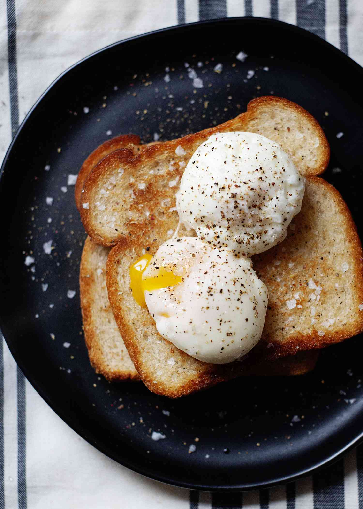

Poached Eggs

Description
Poached eggs are a beautiful thing. The whites are just firm enough on the outside to contain an oozy, golden
yolk in a round little egg package. And with a few tips, you too can learn how to poach an egg perfectly every
time!
Ingredients
- 1 large egg
- 1-2 tbsp vinegar, optional
Steps
- Bring a large pot of water to a boil, then reduce the heat to low.
- While waiting for the water to boil, crack an egg into a small fine mesh sieve over a bowl. Swirl the egg in
the sieve until all the liquid-y egg whites have been removed. Then, place the egg in a ramekin.
- Stir the vinegar into the water and create a vortex. Add the egg to the middle of the vortex and cook the
egg for 3 minutes.
- Remove the egg with a slotted spoon and dab it on a paper towel to remove any excess water. Serve
immediately.
- Alternatively, if making the poached eggs for meal prep or ahead of time, transfer the cooked poached eggs
to an ice water bath and refrigerate for a couple of days. When ready to serve, add boiling water to a bowl,
then add the cold poached egg and submerge for 20-30 seconds or until warmed through. Remove the poached egg
with a slotted spoon, dab dry and serve immediately.